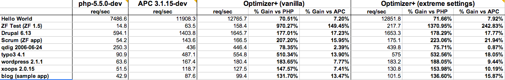

What's New in PHP 5.5
Generators
Support for generators has been added via the yield keyword

range(0, 1000000) vs. user supplied function
Example Usage of Yield Keyword
function getLines($filepath) {
$f = fopen($filepath, 'r');
try {
while ($line = fgets($f)) {
yield $line;
}
} finally {
fclose($f);
}
}
foreach (getLines("file.txt") as $n => $line) {
echo $line;
}The "Finally" Keyword is Finally Here
Execute code ALWAYS.
try {
throw new Exception('hello');
} catch (Exception $e) {
echo $e->getMessage();
} finally {
// this code will always be run
echo ', world';
}
Password Hashing API
A super easy library that uses underlying crypt library.
password_get_info()password_hash()password_needs_rehash()password_verify()
Example of Register/Login
function register($username, $password) {
$hash = password_hash($password, PASSWORD_BCRYPT);
// save hash to database
}
function login($username, $password) {
$hash = getHashFromDbByUsername($username);
if (password_verify($password, $hash)) {
// perform login (store session var)
return true;
}
return false;
}Increasing Password Security
You can optionally supply your own salt and algorithmic cost.
function register($username, $password) {
$options = array('salt' => 'someRandomSalt', 'cost' => 12);
$hash = password_hash($password, PASSWORD_BCRYPT, $options);
// save hash to database
}Example of Upgrading Your Hashing Algorithm
function login($username, $password) {
$hash = getHashFromDbByUsername($username);
if (password_verify($password, $hash)) {
// check if hash is in updated format
if (password_needs_rehash($hash, PASSWORD_BCRYPT)) {
// perform update
$hash = password_hash($password, PASSWORD_BCRYPT);
// save new hash to database
}
// perform login (store session var)
return true;
}
return false;
}Foreach + List
$array = [
[1, 2],
[3, 4],
];
foreach ($array as list($a, $b)) {
echo "A: $a; B: $b\n";
}array_column() fun
$people = [
[
'firstname' => 'John',
'lastname' => 'Doe'
],
[
'firstname' => 'Jane',
'lastname' => 'Doe'
],
];
// contains [ 0 => 'John', 1 => 'Jane' ]
$firstnames = array_column($people, 'firstname');Improvements to empty()
function always_false() {
return false;
}
if (empty(always_false())) {
echo "Hello, world.";
}Array and String Literal Dereferencing
// array dereferencing
echo [1, 2, 3][0];
// string dereferencing
echo 'PHP'[0];Now let's really get crazy...
function foo() {
return array(1, 2, 3);
}
echo foo()[2]; // prints 3
$func = function() { return array('a', 'b', 'c'); };
echo $func()[0]; // prints aZend Optimiser+ OPCache Extension
- Not a replacement for APC/memcache(d). No user cache!
- Available in PHP 5.4 via install.
- Source available: https://github.com/zend-dev/ZendOptimizerPlus
$ php -v
PHP 5.4.17RC1 (cli) (built: Jun 22 2013 19:27:26)
Copyright (c) 1997-2013 The PHP Group
Zend Engine v2.4.0, Copyright (c) 1998-2013 Zend Technologies
with Zend OPcache v7.0.2, Copyright (c) 1999-2013, by Zend TechnologiesSo, uh, what is an opcode cache?
- Component designed to speed up performance of PHP without altering the app.
- Overrides PHP's default compiler callback by checking if a compiled intermediate-code version of the code is available in-memory.
- It skips compilation when it can!
What to do about deprecated APC module?
APC User Cache is in the works:
APC minus the opcode cache!
Backwards Incompatible Changes
- Win XP/2003 support dropped
- self, parent and static are case insensitive
pack()andunpack()made more compatible with perl- http://www.php.net/manual/en/migration55.deprecated.php
CREDITS
QUESTIONS? COMMENTS?
Thanks for pretending to enjoy my banter!